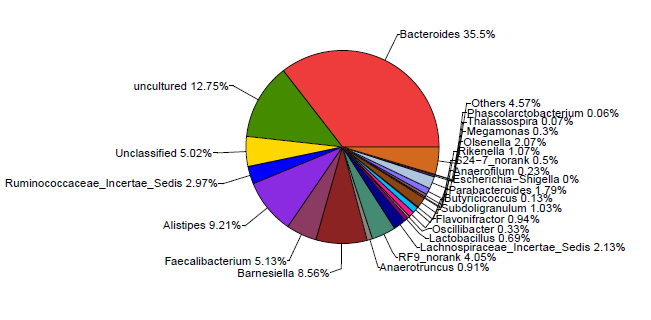

- 选择表格:
- 分类等级：
- 样品分组：
- 确定
结果输出区域_表格
Table名称：样品组分表
| 样本名 | Bacteroides | Prevotella | Blautia | Roseburia | Fusobacterium | uncultured | unclassified | Alistipes |
|---|---|---|---|---|---|---|---|---|
| 样品1 | 33.21 | 15.21 | 3.23 | 4.12 | 11.99 | 13.33 | 10.11 | 8.8 |
| 样品2 | 33.21 | 15.21 | 3.23 | 4.12 | 11.99 | 13.33 | 10.11 | 8.8 |
| 样品3 | 33.21 | 15.21 | 3.23 | 4.12 | 11.99 | 13.33 | 10.11 | 8.8 |
| 样品4 | 33.21 | 15.21 | 3.23 | 4.12 | 11.99 | 13.33 | 10.11 | 8.8 |
| 样品5 | 33.21 | 15.21 | 3.23 | 4.12 | 11.99 | 13.33 | 10.11 | 8.8 |
Table名称：物种分类表
| 界 | 门 | 纲 | 目 | 科 | 属 | 种 |
|---|---|---|---|---|---|---|
| Bacteria | Bacteria | Bacteria | Bacteria | Bacteria | Bacteria | Bacteroides_coprocola_DSM_17136 |
| Bacteria | Bacteria | Bacteria | Bacteria | Bacteria | Bacteria | Bacteroides_coprocola_DSM_17136 |
| Bacteria | Bacteria | Bacteria | Bacteria | Bacteria | Bacteria | Bacteroides_coprocola_DSM_17136 |
| Bacteria | Bacteria | Bacteria | Bacteria | Bacteria | Bacteria | Bacteroides_coprocola_DSM_17136 |
| Bacteria | Bacteria | Bacteria | Bacteria | Bacteria | Bacteria | Bacteroides_coprocola_DSM_17136 |
结果输出区域_图表

- 选择要显示的分类等级：
(当前选择的分类等级(即本栏的第三列)默认选中，并且不可取消,当选择超过一个分类等级之后，饼图会变成螺旋图)
- 合并小于的区域
- 显示数值于